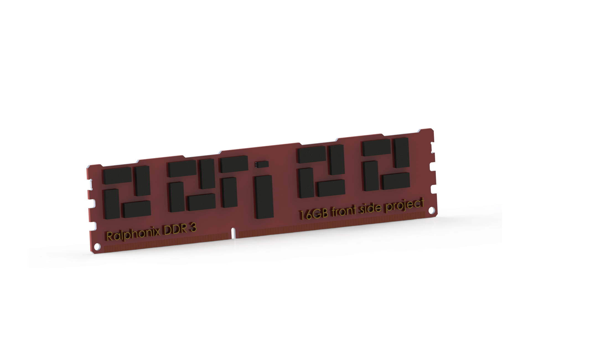
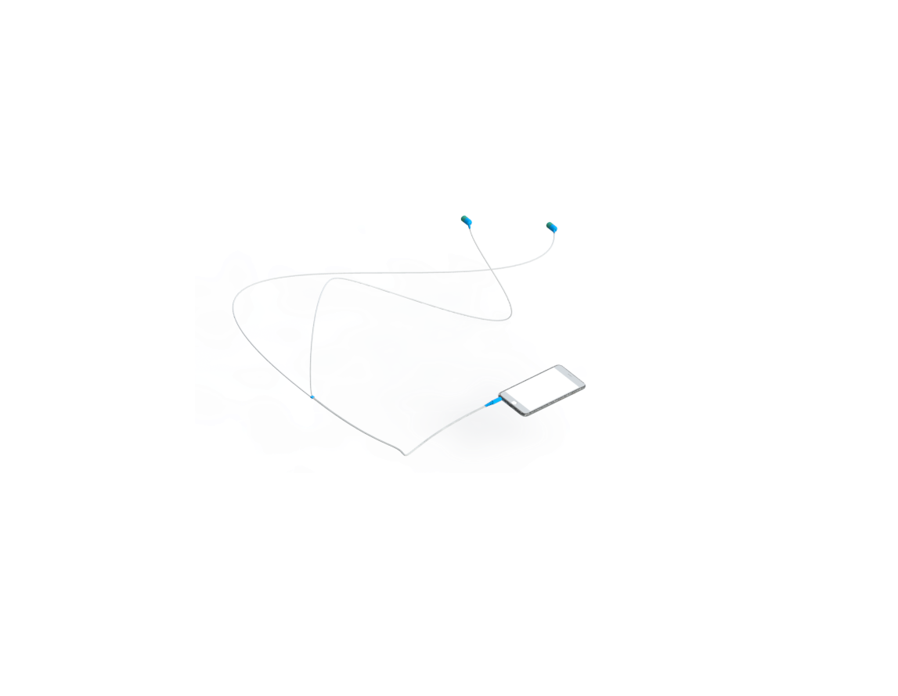
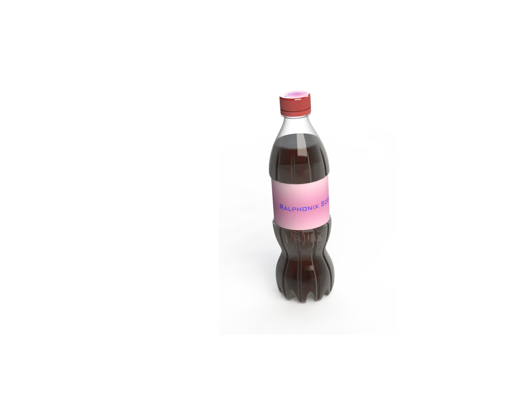
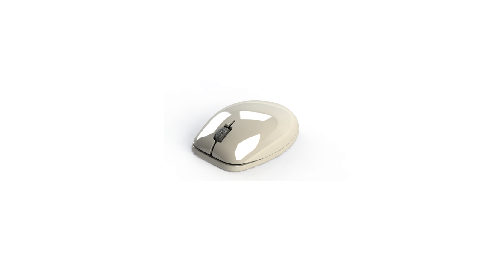
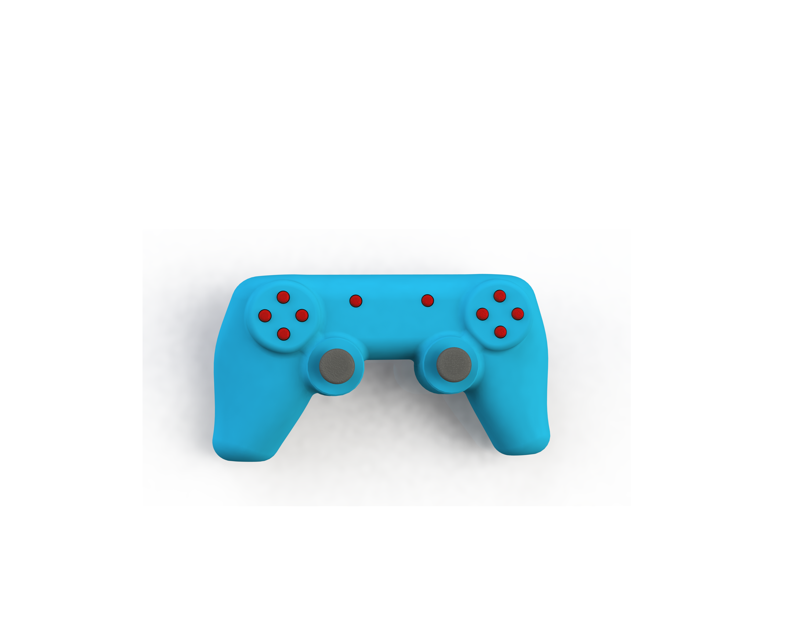

DDR 3 16GB Memory Module Model
A simple model made to represent how to use Extrude Feature

Headphones
A simple Headphone made using the Sweep Feature

A Soda Bottle
A simple model to demonstrate Shell and Cavity Features

A Computer Mouse
A simple model presenting Loft Feature

A Game Controller - Simplified
A Game controller made using Extrude, Split, Shell, Features as well as Draft and Parting Line Analysis
Previous Next
Circuit Board
Above is a simple model to represent a circuit board using simple tools such as Extrude and Extruded Cut Features.
I started by learning what the sketches are and what shapes I can create.
Thanks to provided dimensions from the Micron Website data sheet I could make a sketch to extrude basic shape out of it.
Then after extruding the basic shape, I could add some more sketches to make the model more detailed.
These extra sketches were then used to make Extruded Cut and more Extruded Features.
Thanks to using these simple features I finally got the shape that I wanted to achieve.
As a finishing touch, I simply added some Appearance for the model to have more realistic look and made a rendering using PhotoView 360
Circuit Boards can be used later on for any assembly and further parts references.
But most important it gave me a good basic understanding of sketches and Extrude / Extrude Cut Features.
Earpods Headphones
The simple model above was made to represent the Usage of the Sweep Feature.
I started by learning what the 3D sketches are and how to use them for a simple Sweep Feature later on.
However first I had to start by making a Headphone Jack. To do this I used a simple sketch and Revolve Feature.
For this time I also used Extrude Feature to make the short straight piece of cable for the Jack connection to the rest of the assembly.
After that, I could make a stress relief section using Extrude Feature but this time with the Draft parameter set and unchecked Merge parameter.
That allowed me to use the Extruded Cut feature after to make nice cuts from top to bottom without touching the cable as its separate bodies now.
When everything was prepared I could make good use of the 3D sketch that I had made before and the cable profile to connect all together using the Sweep Feature.
At this point I learned about tangency relation and how to use it in 3d Scatch to make the connections smooth for the Sweep Feature.
According to what I managed to learn here I made a cable plug using the same technique shown on the last image above.
A Soda Bottle
Above model represents the Usage of Revolve and the Cavity Features.
First I started by making the revolve sketch profile to be used as main bottle body.
After the main bottle body was created then I decided to make some details using some Sweep Cut and some Circular pattern for a nice indents inside the bottle body.
For the neck that was great opportunity for me to learn and use Helix feature with the cut profile for making a thread
Then after the body was made successfully I used Shell feature and then made an assembly from the part.
In the assembly using existing part as reference I made a new part to be used later on as a bottle cup.
Transparent appearance was then added and thanks to Cavity Feature I could also make inside of the bottle liquid and added accurate appearence to it.
As a finishing touch I learned about decals and how to use these to make labels on both cup and the bottle body.
Computer Mouse
In the model shown above I could practice the use of Loft and the Split Features.
First I started by the basic shape using simple geometric shapes and Extrude feature to make these
Fillet feature here with a high diameter radius made the overall shape look more natural and refined.
Then I made a Shell and used Split feature to make 2 seperate parts.
Obviously the Game Controller needed some buttons so I had to make space for these using Extruded Cut feature.
After that I worked on mounting 2 parts togather using Mounting Bosses and added some Ribs for integral structure srenght.
A Game Controller - Simplified
Above a simplified version of a Game Controller.
Model was first made using simple Extrude Features to make rough shape.
Then thanks to Filler Feature the shape could be refined into more detailed solid.
Afterward the process was focused on making shell and details.
The challanging part was to make sure that the angles are not too tight to make the Shell Feature work correctly.
For this I could make great use of Evaluate Toolkit.
With that Curvatures not too Tights I could finaly make shell and then final touches like anologs and buttons cuts.
It was very useful to make some Extrude Features using Thin parameter to make inner Ribs.
Another opportunity to use Evaluate Toolkit apeared when I realised that my model wont be optimal for manufacturing if I use regular straight Line for Split.
So with the help of Parting Line Analysis Tool I managed to make a good spliting line
After the things were rather simple just PCB with some buttons on it and analogs.
In reality the model would require much more details but as it was simplified version I could utilize many tools and make it relatively fast while enjoying the process.
Draft Analisis at the end and some Draft Feature use as a finalization process at the end made the part possible to be manufactured using Injection Molding Technology.


{kind=link}
{kind=link}
{kind=link}
{kind=link}
{kind=link}
{kind=link}
{kind=link}
{kind=link}
{kind=link}
{kind=link}
{kind=link}
{kind=link}
{kind=link}
{kind=link}
{kind=link}
{kind=link}
{kind=link}
{kind=link}
{kind=link}
{kind=link}
{kind=link}
{kind=link}
{kind=link}
{kind=link}
{kind=link}
{kind=link}
{kind=link}